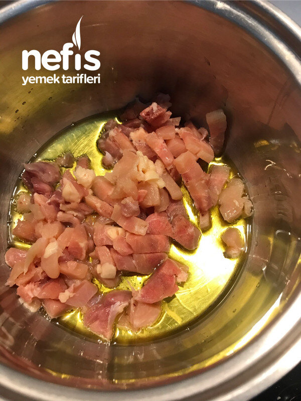

🍽️ 6-8 kişilik⏱️ Hazırlık: 10 dk🔥 Pişirme: 25 dk🏷️ Çorba Tarifleri
Malzemeler
- 1,5 litre su
- 1 parça küçük doğranmış kemiksiz tavuk eti veya 2-3 kaşık kıyma
- 1 yemek kaşığı domates ve biber salçası karışımı
- 1 çay kaşığı toz kırmızı biber (İstenirse pulbiber)
- Yarım fincan kadar zeytinyağı istenirse tereyağı
- 5-6 kaşık toz tarhana
- Tuz
- Serviste istenirse karabiber
Hazırlanışı
- Önce yağımızı tencereye alıp ocağı açıyoruz.
- Tavuk etlerini ilave ederek kavuruyoruz.
- Kavrulan tavuklara, salça ve toz biber ilave ediyoruz.
- 1,5 litre suyumuzu da ilave ediyoruz.
- Ardından 5-6 kaşık kadar toz tarhanayı koyarak pişme noktasına kadar karıştırarak pişiriyoruz.
- Ocağı kısıp 3-4 dakika kadar kaynatıyoruz.
- Tuzunu, kıvamını ayarlayıp ocağı kapatıyoruz. Nefis tarhana çorbamız servise hazır. Afiyet olsun 😊